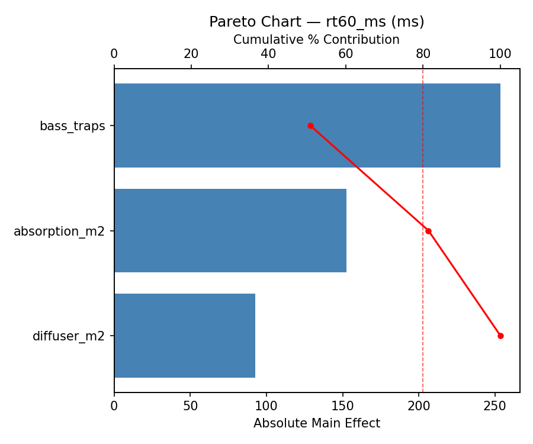
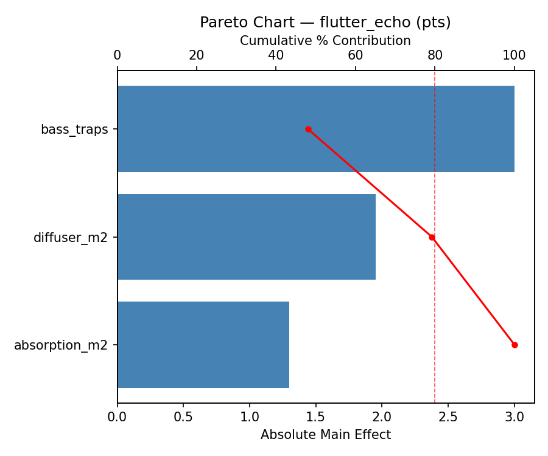
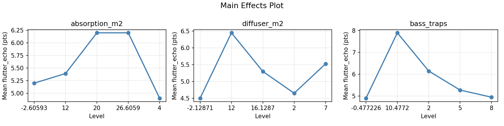
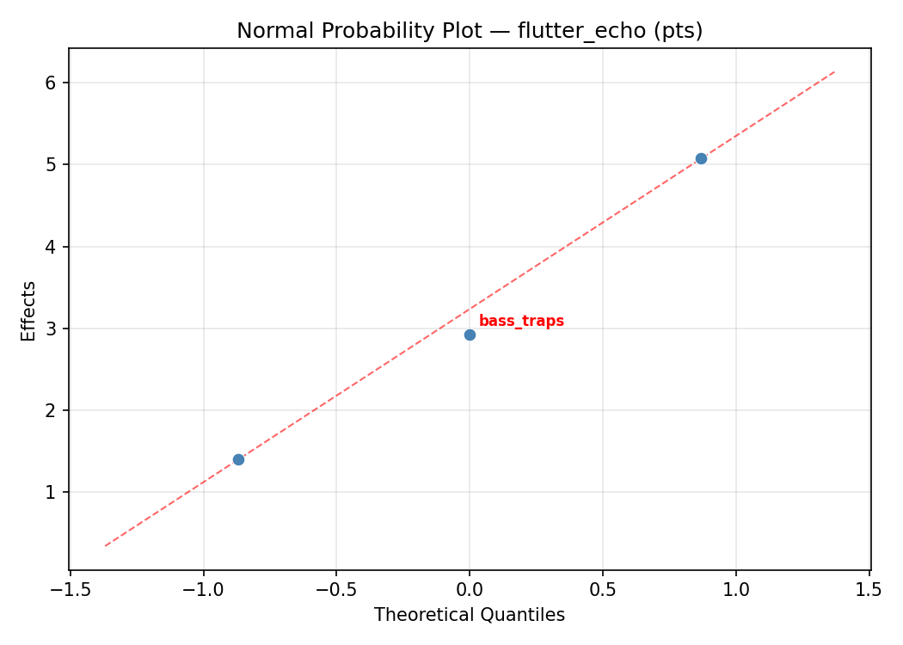
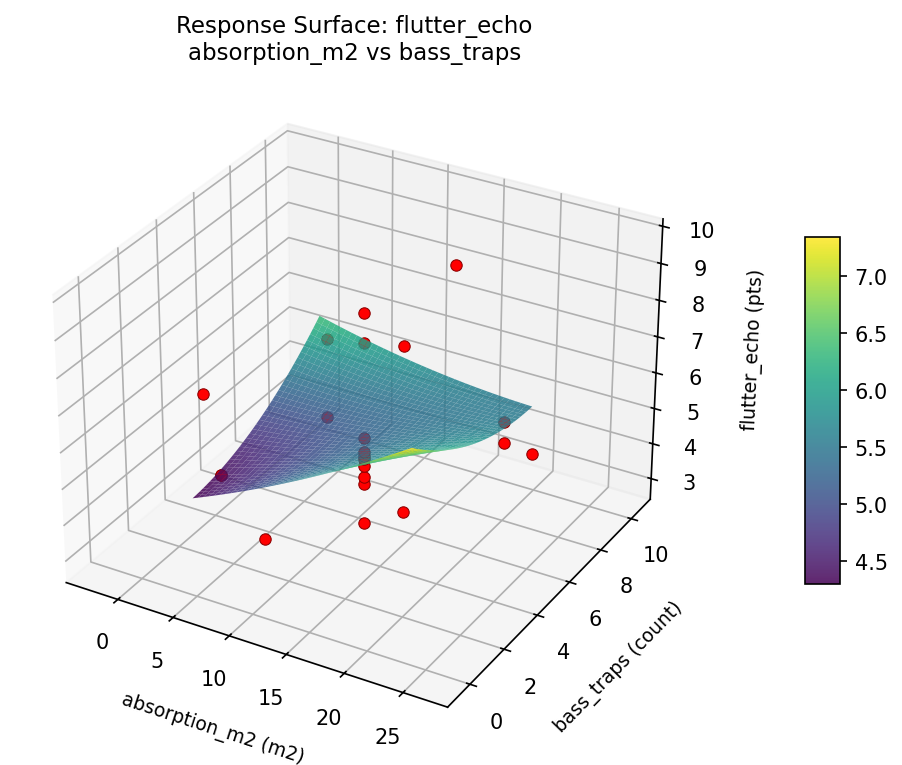
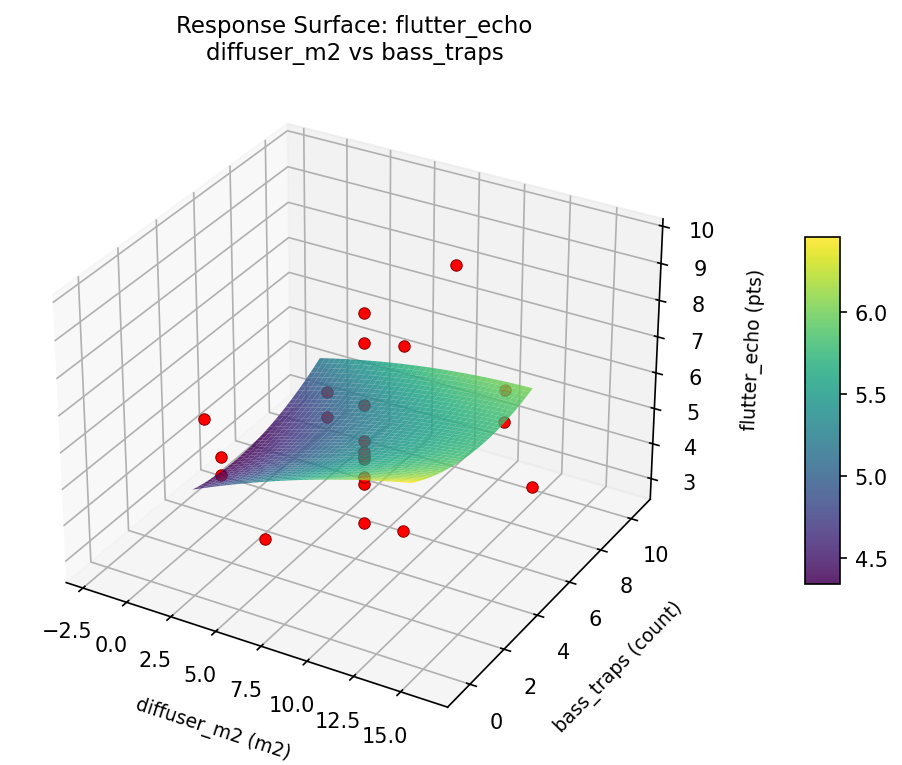
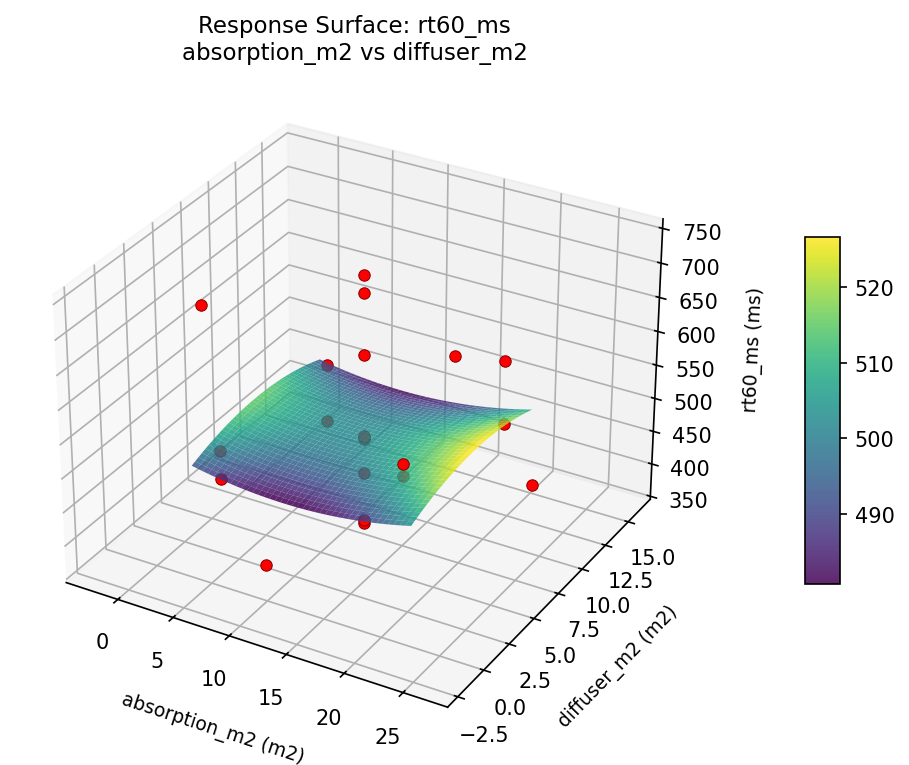

Summary
This experiment investigates room acoustics treatment. Central composite design to optimize RT60 reverb time and minimize flutter echo by tuning absorption panel area, diffuser coverage, and bass trap count.
The design varies 3 factors: absorption m2 (m2), ranging from 4 to 20, diffuser m2 (m2), ranging from 2 to 12, and bass traps (count), ranging from 2 to 8. The goal is to optimize 2 responses: rt60 ms (ms) (minimize) and flutter echo (pts) (minimize). Fixed conditions held constant across all runs include room m3 = 50, purpose = mixing_studio.
A Central Composite Design (CCD) was selected to fit a full quadratic response surface model, including curvature and interaction effects. With 3 factors this produces 22 runs including center points and axial (star) points that extend beyond the factorial range.
Quadratic response surface models were fitted to capture potential curvature and factor interactions. The RSM contour plots below visualize how pairs of factors jointly affect each response.
Key Findings
For rt60 ms, the most influential factors were diffuser m2 (34.9%), absorption m2 (33.7%), bass traps (31.3%). The best observed value was 372.0 (at absorption m2 = 4, diffuser m2 = 2, bass traps = 2).
For flutter echo, the most influential factors were diffuser m2 (41.6%), bass traps (37.4%), absorption m2 (21.0%). The best observed value was 2.9 (at absorption m2 = 26.6059, diffuser m2 = 7, bass traps = 5).
Recommended Next Steps
- Run confirmation experiments at the predicted optimal settings to validate the model.
- Consider whether any fixed factors should be varied in a future study.
Experimental Setup
Factors
| Factor | Low | High | Unit |
|---|
absorption_m2 | 4 | 20 | m2 |
diffuser_m2 | 2 | 12 | m2 |
bass_traps | 2 | 8 | count |
Fixed: room_m3 = 50, purpose = mixing_studio
Responses
| Response | Direction | Unit |
|---|
rt60_ms | ↓ minimize | ms |
flutter_echo | ↓ minimize | pts |
Configuration
{
"metadata": {
"name": "Room Acoustics Treatment",
"description": "Central composite design to optimize RT60 reverb time and minimize flutter echo by tuning absorption panel area, diffuser coverage, and bass trap count"
},
"factors": [
{
"name": "absorption_m2",
"levels": [
"4",
"20"
],
"type": "continuous",
"unit": "m2"
},
{
"name": "diffuser_m2",
"levels": [
"2",
"12"
],
"type": "continuous",
"unit": "m2"
},
{
"name": "bass_traps",
"levels": [
"2",
"8"
],
"type": "continuous",
"unit": "count"
}
],
"fixed_factors": {
"room_m3": "50",
"purpose": "mixing_studio"
},
"responses": [
{
"name": "rt60_ms",
"optimize": "minimize",
"unit": "ms"
},
{
"name": "flutter_echo",
"optimize": "minimize",
"unit": "pts"
}
],
"settings": {
"operation": "central_composite",
"test_script": "use_cases/158_room_acoustics/sim.sh"
}
}
Experimental Matrix
The Central Composite Design produces 22 runs. Each row is one experiment with specific factor settings.
| Run | absorption_m2 | diffuser_m2 | bass_traps |
|---|
| 1 | 12 | 7 | 5 |
| 2 | 20 | 2 | 8 |
| 3 | 4 | 12 | 2 |
| 4 | 12 | 16.1287 | 5 |
| 5 | 12 | 7 | 5 |
| 6 | -2.60593 | 7 | 5 |
| 7 | 12 | 7 | -0.477226 |
| 8 | 12 | 7 | 5 |
| 9 | 20 | 12 | 2 |
| 10 | 26.6059 | 7 | 5 |
| 11 | 12 | 7 | 5 |
| 12 | 12 | -2.12871 | 5 |
| 13 | 12 | 7 | 5 |
| 14 | 4 | 2 | 8 |
| 15 | 12 | 7 | 5 |
| 16 | 20 | 2 | 2 |
| 17 | 12 | 7 | 10.4772 |
| 18 | 20 | 12 | 8 |
| 19 | 12 | 7 | 5 |
| 20 | 4 | 2 | 2 |
| 21 | 4 | 12 | 8 |
| 22 | 12 | 7 | 5 |
Step-by-Step Workflow
1
Preview the design
$ python doe.py info --config use_cases/158_room_acoustics/config.json
2
Generate the runner script
$ python doe.py generate --config use_cases/158_room_acoustics/config.json \
--output use_cases/158_room_acoustics/results/run.sh --seed 42
3
Execute the experiments
$ bash use_cases/158_room_acoustics/results/run.sh
4
Analyze results
$ python doe.py analyze --config use_cases/158_room_acoustics/config.json
5
Get optimization recommendations
$ python doe.py optimize --config use_cases/158_room_acoustics/config.json
6
Multi-objective optimization
With 2 competing responses, use --multi to find the best compromise via Derringer–Suich desirability.
$ python doe.py optimize --config use_cases/158_room_acoustics/config.json --multi
7
Generate the HTML report
$ python doe.py report --config use_cases/158_room_acoustics/config.json \
--output use_cases/158_room_acoustics/results/report.html
Features Exercised
| Feature | Value |
|---|
| Design type | central_composite |
| Factor types | continuous (all 3) |
| Arg style | double-dash |
| Responses | 2 (rt60_ms ↓, flutter_echo ↓) |
| Total runs | 22 |
Analysis Results
Generated from actual experiment runs using the DOE Helper Tool.
Response: rt60_ms
Top factors: diffuser_m2 (34.9%), absorption_m2 (33.7%), bass_traps (31.3%).
ANOVA
| Source | DF | SS | MS | F | p-value |
|---|
| Source | DF | SS | MS | F | p-value |
| absorption_m2 | 4 | 42717.9470 | 10679.4867 | 1.280 | 0.3468 |
| diffuser_m2 | 4 | 36114.4470 | 9028.6117 | 1.082 | 0.4205 |
| bass_traps | 4 | 16907.1970 | 4226.7992 | 0.507 | 0.7326 |
| Lack | of | Fit | 2 | 30125.2727 | 15062.6364 |
| Pure | Error | 7 | 58409.5000 | | |
| Error | 9 | 88534.7727 | 8344.2143 | | |
| Total | 21 | 184274.3636 | 8774.9697 | | |
Pareto Chart

Main Effects Plot

Normal Probability Plot of Effects

Half-Normal Plot of Effects

Model Diagnostics

Response: flutter_echo
Top factors: diffuser_m2 (41.6%), bass_traps (37.4%), absorption_m2 (21.0%).
ANOVA
| Source | DF | SS | MS | F | p-value |
|---|
| Source | DF | SS | MS | F | p-value |
| absorption_m2 | 4 | 4.2345 | 1.0586 | 0.272 | 0.8890 |
| diffuser_m2 | 4 | 17.6470 | 4.4117 | 1.132 | 0.4004 |
| bass_traps | 4 | 10.4086 | 2.6022 | 0.668 | 0.6303 |
| Lack | of | Fit | 2 | 0.0000 | 0.0000 |
| Pure | Error | 7 | 27.2787 | | |
| Error | 9 | 26.1086 | 3.8970 | | |
| Total | 21 | 58.3986 | 2.7809 | | |
Pareto Chart

Main Effects Plot

Normal Probability Plot of Effects

Half-Normal Plot of Effects

Model Diagnostics

Response Surface Plots
3D surfaces fitted with quadratic RSM. Red dots are observed data points.
flutter echo absorption m2 vs bass traps

flutter echo absorption m2 vs diffuser m2

flutter echo diffuser m2 vs bass traps

rt60 ms absorption m2 vs bass traps

rt60 ms absorption m2 vs diffuser m2

rt60 ms diffuser m2 vs bass traps

Multi-Objective Optimization
When responses compete, Derringer–Suich desirability finds the best compromise.
Each response is scaled to a 0–1 desirability, then combined via a weighted geometric mean.
Overall Desirability
D = 0.9505
Per-Response Desirability
| Response | Weight | Desirability | Predicted | Dir |
|---|
rt60_ms |
1.0 |
|
376.00 0.9446 376.00 ms |
↓ |
flutter_echo |
1.5 |
|
2.90 0.9545 2.90 pts |
↓ |
Recommended Settings
| Factor | Value |
|---|
absorption_m2 | 26.6059 m2 |
diffuser_m2 | 7 m2 |
bass_traps | 5 count |
Source: from observed run #18
Trade-off Summary
Sacrifice = how much worse than single-objective best.
| Response | Predicted | Best Observed | Sacrifice |
|---|
flutter_echo | 2.90 | 2.90 | +0.00 |
Top 3 Runs by Desirability
| Run | D | Factor Settings |
|---|
| #10 | 0.8461 | absorption_m2=20, diffuser_m2=12, bass_traps=8 |
| #9 | 0.7903 | absorption_m2=4, diffuser_m2=2, bass_traps=2 |
Model Quality
| Response | R² | Type |
|---|
flutter_echo | 0.6021 | quadratic |
Full Multi-Objective Output
============================================================
MULTI-OBJECTIVE OPTIMIZATION
Method: Derringer-Suich Desirability Function
============================================================
Overall desirability: D = 0.9505
Response Weight Desirability Predicted Direction
---------------------------------------------------------------------
rt60_ms 1.0 0.9446 376.00 ms ↓
flutter_echo 1.5 0.9545 2.90 pts ↓
Recommended settings:
absorption_m2 = 26.6059 m2
diffuser_m2 = 7 m2
bass_traps = 5 count
(from observed run #18)
Trade-off summary:
rt60_ms: 376.00 (best observed: 372.00, sacrifice: +4.00)
flutter_echo: 2.90 (best observed: 2.90, sacrifice: +0.00)
Model quality:
rt60_ms: R² = 0.5956 (quadratic)
flutter_echo: R² = 0.6021 (quadratic)
Top 3 observed runs by overall desirability:
1. Run #18 (D=0.9505): absorption_m2=26.6059, diffuser_m2=7, bass_traps=5
2. Run #10 (D=0.8461): absorption_m2=20, diffuser_m2=12, bass_traps=8
3. Run #9 (D=0.7903): absorption_m2=4, diffuser_m2=2, bass_traps=2
Full Analysis Output
=== Main Effects: rt60_ms ===
Factor Effect Std Error % Contribution
--------------------------------------------------------------
diffuser_m2 145.0000 19.9715 34.9%
absorption_m2 140.0000 19.9715 33.7%
bass_traps 130.0000 19.9715 31.3%
=== ANOVA Table: rt60_ms ===
Source DF SS MS F p-value
-----------------------------------------------------------------------------
absorption_m2 4 42717.9470 10679.4867 1.280 0.3468
diffuser_m2 4 36114.4470 9028.6117 1.082 0.4205
bass_traps 4 16907.1970 4226.7992 0.507 0.7326
Lack of Fit 2 30125.2727 15062.6364 1.805 0.2332
Pure Error 7 58409.5000 8344.2143
Error 9 88534.7727 8344.2143
Total 21 184274.3636 8774.9697
=== Summary Statistics: rt60_ms ===
absorption_m2:
Level N Mean Std Min Max
------------------------------------------------------------
-2.60593 1 499.0000 0.0000 499.0000 499.0000
12 12 513.4167 84.8833 372.0000 628.0000
20 4 466.7500 43.3772 419.0000 504.0000
26.6059 1 502.0000 0.0000 502.0000 502.0000
4 4 606.7500 137.4224 468.0000 737.0000
diffuser_m2:
Level N Mean Std Min Max
------------------------------------------------------------
-2.12871 1 448.0000 0.0000 448.0000 448.0000
12 4 480.5000 32.1092 441.0000 510.0000
16.1287 1 571.0000 0.0000 571.0000 571.0000
2 4 593.0000 156.0919 419.0000 737.0000
7 12 511.9167 80.8888 372.0000 628.0000
bass_traps:
Level N Mean Std Min Max
------------------------------------------------------------
-0.477226 1 493.0000 0.0000 493.0000 493.0000
10.4772 1 623.0000 0.0000 623.0000 623.0000
2 4 531.7500 141.1037 419.0000 737.0000
5 12 503.8333 77.4994 372.0000 628.0000
8 4 541.7500 117.7126 441.0000 712.0000
=== Main Effects: flutter_echo ===
Factor Effect Std Error % Contribution
--------------------------------------------------------------
diffuser_m2 3.2250 0.3555 41.6%
bass_traps 2.9000 0.3555 37.4%
absorption_m2 1.6250 0.3555 21.0%
=== ANOVA Table: flutter_echo ===
Source DF SS MS F p-value
-----------------------------------------------------------------------------
absorption_m2 4 4.2345 1.0586 0.272 0.8890
diffuser_m2 4 17.6470 4.4117 1.132 0.4004
bass_traps 4 10.4086 2.6022 0.668 0.6303
Lack of Fit 2 0.0000 0.0000 0.000 1.0000
Pure Error 7 27.2787 3.8970
Error 9 26.1086 3.8970
Total 21 58.3986 2.7809
=== Summary Statistics: flutter_echo ===
absorption_m2:
Level N Mean Std Min Max
------------------------------------------------------------
-2.60593 1 4.7000 0.0000 4.7000 4.7000
12 12 5.2917 1.8078 2.9000 9.7000
20 4 5.5250 0.7932 4.5000 6.2000
26.6059 1 4.9000 0.0000 4.9000 4.9000
4 4 6.3250 2.3329 3.9000 8.7000
diffuser_m2:
Level N Mean Std Min Max
------------------------------------------------------------
-2.12871 1 4.0000 0.0000 4.0000 4.0000
12 4 4.6250 0.5852 3.9000 5.3000
16.1287 1 5.3000 0.0000 5.3000 5.3000
2 4 7.2250 1.2842 6.1000 8.7000
7 12 5.3167 1.7781 2.9000 9.7000
bass_traps:
Level N Mean Std Min Max
------------------------------------------------------------
-0.477226 1 5.2000 0.0000 5.2000 5.2000
10.4772 1 7.9000 0.0000 7.9000 7.9000
2 4 5.8000 1.6693 3.9000 7.9000
5 12 5.0000 1.6130 2.9000 9.7000
8 4 6.0500 1.9157 4.5000 8.7000
Optimization Recommendations
=== Optimization: rt60_ms ===
Direction: minimize
Best observed run: #10
absorption_m2 = 4
diffuser_m2 = 2
bass_traps = 2
Value: 372.0
RSM Model (linear, R² = 0.1585, Adj R² = 0.0182):
Coefficients:
intercept +520.7273
absorption_m2 +18.2016
diffuser_m2 +4.2123
bass_traps +40.5248
RSM Model (quadratic, R² = 0.3080, Adj R² = -0.2110):
Coefficients:
intercept +520.0561
absorption_m2 +18.2016
diffuser_m2 +4.2123
bass_traps +40.5248
absorption_m2*diffuser_m2 -10.3750
absorption_m2*bass_traps +11.1250
diffuser_m2*bass_traps -42.3750
absorption_m2^2 -16.9144
diffuser_m2^2 +3.3355
bass_traps^2 +14.5857
Curvature analysis:
absorption_m2 coef=-16.9144 concave (has a maximum)
bass_traps coef=+14.5857 convex (has a minimum)
diffuser_m2 coef=+3.3355 convex (has a minimum)
Notable interactions:
diffuser_m2*bass_traps coef=-42.3750 (antagonistic)
absorption_m2*bass_traps coef=+11.1250 (synergistic)
absorption_m2*diffuser_m2 coef=-10.3750 (antagonistic)
Predicted optimum (from linear model, at observed points):
absorption_m2 = 12
diffuser_m2 = 7
bass_traps = 10.4772
Predicted value: 594.7147
Surface optimum (via L-BFGS-B, linear model):
absorption_m2 = 4
diffuser_m2 = 2
bass_traps = 2
Predicted value: 457.7886
Model quality: Weak fit — consider adding center points or using a different design.
Factor importance:
1. absorption_m2 (effect: 227.8, contribution: 59.5%)
2. bass_traps (effect: 110.2, contribution: 28.8%)
3. diffuser_m2 (effect: 44.8, contribution: 11.7%)
=== Optimization: flutter_echo ===
Direction: minimize
Best observed run: #18
absorption_m2 = 26.6059
diffuser_m2 = 7
bass_traps = 5
Value: 2.9
RSM Model (linear, R² = 0.1935, Adj R² = 0.0591):
Coefficients:
intercept +5.4773
absorption_m2 +0.2079
diffuser_m2 -0.2250
bass_traps +0.8225
RSM Model (quadratic, R² = 0.4904, Adj R² = 0.1082):
Coefficients:
intercept +5.5575
absorption_m2 +0.2079
diffuser_m2 -0.2250
bass_traps +0.8225
absorption_m2*diffuser_m2 -0.6875
absorption_m2*bass_traps +0.1875
diffuser_m2*bass_traps -0.3125
absorption_m2^2 -0.4701
diffuser_m2^2 -0.2001
bass_traps^2 +0.5499
Curvature analysis:
bass_traps coef=+0.5499 convex (has a minimum)
absorption_m2 coef=-0.4701 concave (has a maximum)
diffuser_m2 coef=-0.2001 concave (has a maximum)
Notable interactions:
absorption_m2*diffuser_m2 coef=-0.6875 (antagonistic)
diffuser_m2*bass_traps coef=-0.3125 (antagonistic)
Predicted optimum (from quadratic model, at observed points):
absorption_m2 = 12
diffuser_m2 = 7
bass_traps = 10.4772
Predicted value: 8.8921
Surface optimum (via L-BFGS-B, quadratic model):
absorption_m2 = 4
diffuser_m2 = 2
bass_traps = 2.41525
Predicted value: 3.8087
Model quality: Weak fit — consider adding center points or using a different design.
Factor importance:
1. bass_traps (effect: 4.8, contribution: 51.2%)
2. absorption_m2 (effect: 3.4, contribution: 36.8%)
3. diffuser_m2 (effect: 1.1, contribution: 12.0%)